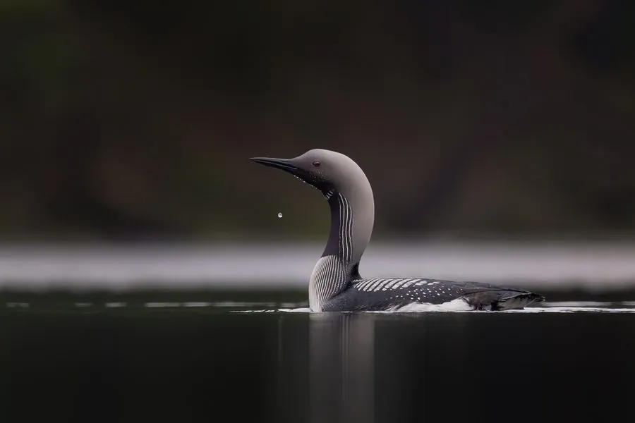

鸟类 · 动物界
黑喉潜鸟 Gavia arctica

欧亚大陆北部的潜水鸟，繁殖期头颈乌黑、喉部有金属光泽，背部黑白棋盘格，善在水中追鱼，叫声凄清悠远。
- 分类
- 门脊索动物门纲鸟纲目潜鸟目科潜鸟科属潜鸟属
- 栖息环境
- 欧亚大陆北部的针叶林湖泊、苔原水体与河湾，冬季在近海海湾和河口
- 地理分布
- 繁殖于北欧、西伯利亚至阿拉斯加西部，越冬于西欧、黑海、日本及中国沿海
- 保护级别
- IUCN 无危（LC）
物种志
黑喉潜鸟体长 58–73 cm，翼展约 110–130 cm，体重 2–3.4 kg。繁殖羽头部和喉部乌黑并带绿紫色光泽，颈侧有黑白纵纹，胸腹洁白，背部灰黑并布满黑白棋盘状斑纹，喙直而尖。冬季羽色转为灰褐，喉部和腹部白色，外形朴素。
它们繁殖于欧亚大陆北部的针叶林湖泊、苔原水体和河湾，冬季南迁至西欧沿海、黑海、里海、日本及中国沿海。黑喉潜鸟几乎一生在水中度过，腿位于身体极后方，行走笨拙却极善潜水，可下潜数十米追逐小鱼，也吃甲壳类和软体动物。繁殖期在 5–6 月，在水边浅滩筑浮巢，每窝产卵 2 枚，双亲孵化约 28–30 天。它们对人为干扰敏感，常被当作湿地环境质量的指示物种。
形态与习性
- 食性小鱼、甲壳类和软体动物
- 体长58–73 cm，翼展约 110–130 cm
- 体重2–3.4 kg
- 繁殖5–6 月，每窝 2 枚，双亲孵化 28–30 天
- 寿命约 20–25 年
- 习性极善潜水，行走笨拙，几乎一生在水中度过
趣味知识
- 黑喉潜鸟的腿长在身体极靠后的位置，走路摇摇晃晃，潜水却十分敏捷。
- 繁殖期它的叫声凄清悠长，在安静的北方湖面上能传出很远。
- 它把巢建在水边，巢材湿透后常半沉在水中，便于随时下水逃生。